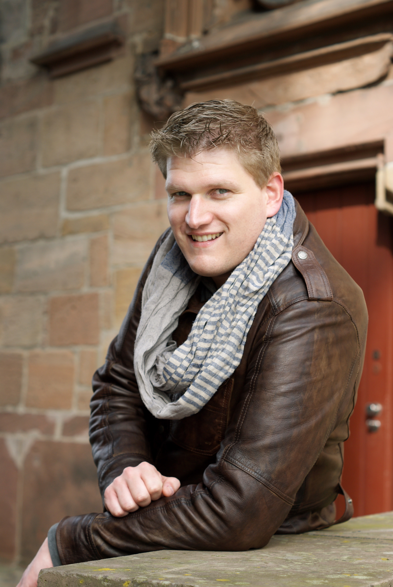

Eddy is a researcher at the Department of User Experience and Requirements Engineering of the Fraunhofer Institute for Experimental Software Engineering (IESE) in Kaiserslautern, Germany. He holds a master's degree in Psychology with a specialization in Engineering Psychology from the University of Twente, the Netherlands. His research interests include the derivation of functional and non-functional requirements from natural language texts and the development of task-oriented development practices. Since 2015, he has published several works on CrowdRE at among others the RE, REFSQ and in IEEE Software. He co-organizes the CreaRE and CrowdRE workshop series. He is a program committee member for NLP4RE and FIRE and has reviewed for Information and Software Technology.